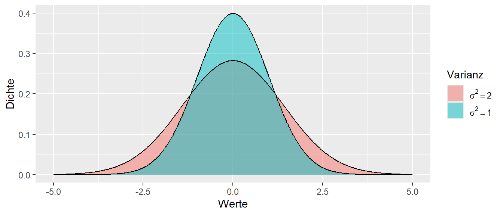
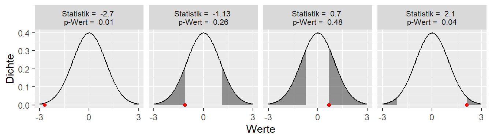
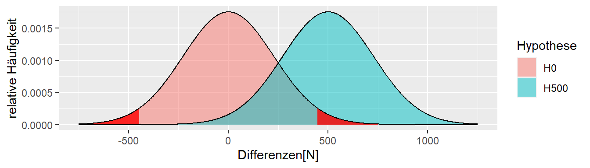

2 Statistische Signifikanz, p-Wert und Power
Im vorherigen Kapitel haben wir gesehen, wie Unsicherheit ein zentrales Problem bei der Interpretation von Ergebnissen von Experimenten oder Daten allgemein ist. Im nun folgenden Abschnitt wollen wir eine Prozess aufbauen, der es uns vor dem Hintergrund dieser Unsicherheit eine Entscheidung zu treffen.
2.1 Wie treffe ich eine Entscheidung?
In unserem kleine Welt Bespiel waren wir in der komfortablen Position, das wir genau wussten was passiert bzw. welcher Prozess unseren beobachteten Datenpunkt erzeugt hat. D.h wir kannten den datengenerieren Prozesses.
Definition 2.1 (Datengenerierender Prozess (DGP)) Der Prozess in der realen Welt der die beobachteten Daten und damit die daraus folgende Statistik erzeugt wird als datengenerierender Prozess bezeichnet.
Letztendlich zielt unsere Untersuchung, unser Experiment, darauf ab, Informationen über den DGP zu erhalten, weil diese Information uns erlaubt Aussagen über die reale Welt zu treffen. Dabei muss allerdings beachtet werden, dass dieser Prozess in den allermeisten Fällen ein starke Vereinfachung des tatsächlichen Prozesses in der Realität darstellt. Meistens sind die Abläufe in der Realität zu komplex um sie ins Gänze abzubilden. Somit wird fast immer nur ein Modell verwendet.
Zurück zu unseren Problem, wenn wir ein Experiment durchführen, dann haben wir normalerweise nur eine einzige beobachtete Statistik. In unseren bisherigen Beispiel also den berechneten Unterschied \(D\) in der Kraftfähigkeit nach der Intervention zwischen der Kontroll- und der Interventionsgruppe.
In Abbildung 2.1 ist der beobachtete Wert, \(D = 50\) abgetragen. Wir wissen von vorne herein, dass dieser Wert beeinflusst ist durch die zufällige Wahl der Stichprobe und die daran geknüpfte Streuung der Werte in der Population. Wie können wir den nun überhaupt eine Aussage treffen darüber, ob das Krafttraining was bringt oder vielleicht nur einen sehr kleinen Effekt zeigt oder möglicherweise sogar schädlich ist also zu einer Abnahme der Kraft führt?
Überlegen wir uns zunächst, welche Prozesse unseren beobachteten Wert zustande gebracht haben könnten. Wir haben schon zwei Prozesse kennengelernt, einmal den Prozess mit \(\Delta = 100\) wie auch den Prozess mit \(\Delta = 0\)
In Abbildung 2.2 ist wieder unser beobachteter Wert \(D = 50\) und die beiden Verteilungen abgetragen. Leider können wir nicht eineindeutig sagen, welche der beiden Verteilungen, bzw. deren zugrundeliegende Prozesse, unseren beobachteten Wert erzeugt haben könnte. Da unser beobachteter Wert \(D\) genau zwischen den beiden Maxima der Verteilungen liegt. Etwas motiviertes Starren auf die Abbildung wird uns allerdings auf die Idee bringen, dass der beobachtete Wert nicht nur von diesen beiden Verteilungen erzeugt worden sein muss, sondern durchaus noch mehr Verteilungen in Frage kommen.

Abbildung 2.3 zeigt, dass selbst die Verteilung mit \(\Delta = -250N\) und \(\Delta = 350N\) nicht unplausibel sind den beobachteten Wert erzeugt zu haben. Warum aber bei diesen fünf Verteilungen aufhören, warum sollte \(\Delta\) nicht \(-50\) oder \(127\) sein. Und überhaupt, keiner kann behaupten die Natur kennt nur ganzzahlige Werte (siehe \(\pi\)). Warum sollte \(D\) also nicht auch \(123.4567N\) sein?
Wenn diese Überlegung weitergeführt wird, dann wird schnell klar, dass letztendlich eine unendliche Anzahl von Verteilung in der Lage ist unseren beobachteten Wert plausibel zu generieren. D.h. wir haben ein Experiment durchgeführt und den ganzen Aufwand betrieben und haben wochenlang mit unseren ProbandInnen Krafttraining durchgeführt und sind hinterher eigentlich keinen Schritt weiter da wir immer noch nicht wissen was der datengenerierende Prozess ist. Also können wir selbst nach dem Experiment nicht sagen ob unser Krafttraining tatsächlich wirksam ist.
Zum Glück werden wir später sehen, das unser Unterfangen nicht ganz so aussichtslos ist. Schauen wir uns zum Beispiel die Verteilung für \(\Delta = -350N\) an (Abbildung 2.4).

Unser beobachteter Wert unter der Annahme das \(\Delta = -350N\) ist nicht vollkommen unmöglich, aber so richtig wahrscheinlich erscheint er auch nicht. Der Wert liegt relativ weit am Rand der Verteilung. Die Kurve ist dort schon ziemlich nahe bei Null. D.h. der beobachtete Wert ist zwar durchaus möglich, aber es wäre schon überraschend wenn wir bei einer Durchführung des Experiments ausgerechnet so einen Wert beobachten würden wenn unsere angenommenes \(\Delta\) korrekt ist.
Wenn wir jetzt dagegen von der Annahme ausgehen, dass dem DGP der Wert \(\Delta = 50N\) zugrundeliegen würde, hätten wir die Verteilung in Abbildung 2.5. Zunächst ist dieser Wert möglich unter der Annahme. Zusätzlich liegt der beobachtete Wert mitten drin in dem Teil der Verteilung der auch zu erwarten wäre. D.h. der beobachtete Wert ist durchaus plausibel unter der Annahme und bei der einmaligen Durchführung des Experiments würde uns der beobachtete Wert nicht unbedingt überraschen.
Diesen Ansatz können wir verwenden um mit Hilfe unseres Experiments doch etwas über den DGP auszusagen. Allerdings müssen wir uns noch einmal etwas eingehender mit Verteilungen auseinandersetzen um z.B. genauer zu bestimmen welche Ergebnisse uns überraschen würden. D.h. wir müssen uns erst ein mal ein paar neue Konzepte erarbeiten.
2.2 Lage- und Skalenparameter
In Abbildung 2.3 hatten wir mehrere Verteilungen abgebildet. Die Verteilung haben die gleiche Form sind aber gegeneinander verschoben. D.h. sie unterscheiden sich bezüglich ihrer Position bzw. Lage. Der Parameter der bei einer Verteilungen die Lage steuert ist der sogenannte Erwartungwerts \(\mu\) der auch als Mittelwert bezeichnet wird. Dieser Mittelwert \(\mu\) unterscheidet sich allerdings von dem uns bereits bekannten Mittelwert \(\bar{x}\) in der Stichprobe. In einem späteren Abschnitt werden wir uns genauer anschauen wie der Mittelwert \(\mu\) berechnet wird.
2.2.1 Mittelwert \(\mu\) der Population
Da der Mittelwert \(\mu\) die Position der Verteilung bestimmt, ist \(\mu\) ein Parameter der Verteilung. Die Beschreibung als Parameter der Verteilung bedeutet somit, dass die Verteilung von \(\mu\) abhängt, oder formaler das die Verteilung eine Funktion von \(\mu\) ist. Wenn wir uns an Funktionen aus der Schule zurück erinnen wo wir Funktionen \(f\) von \(x\) kennengelernt haben und als \(f(x)\) dargestellt haben. Übertragen auf die Verteilung könnte dies mittels \(f(\mu)\) dargestellt werden.
Betrachten wir zwei Verteilungen die sich bezüglich ihrer Mittelwerte \(\mu\) unterscheiden. Zum Beispiel sei \(\mu_1 = 0\) und \(\mu_2 = 3\). Wie in Abbildung 2.6 zu sehen ist, führt dies dazu, das die beiden Verteilungen gegeneinander verschoben sind.

Wie bereits erwähnt, wird der Mittelwert \(\mu\) der Verteilung auch als Erwartungswert bezeichnet. Dies kann dahingehend interpretiert werden, das wenn Stichproben aus dieser Verteilungen gezogen werden, im Mittel der Wert \(\mu\) erwartet werden kann. Soweit ist dies eigentlich noch nichts wirklich Neues, sondern hatten dies schon vorher gesehen, als wir alle möglichen Unterschiede zwischen der Kontrollgruppe und der Interventionsgruppe ermittelt haben. Hier war der Mittelwert der Verteilung genau derjenige Wert von \(\Delta\).
An dieser Stelle nochmal der Unterschied zwischen \(\mu\) und \(\bar{x}\). Der Mittelwert \(\mu\) ist eine Eigenschaft der Population, also letztendlich ein Wert den wir niemals kennen werden ohne die gesamte Population zu untersuchen. Der Mittelwert \(\bar{x}\) ist eine Eigenschaft der Stichprobe aus der Population. Also der konkrete Wert den wir anhand der Stichprobe berechnen. In vielen Fällen versuchen wir über \(\bar{x}\) einen Rückschluss auf \(\mu\) zu ziehen.
2.2.2 Standardabweichung \(\sigma\) der Population
Als zweite Eigenschaft von Verteilungen schauen wir uns jetzt die Streuung in der Population an. Die Streuung in der Population wird als Varianz bezeichnet und wird mit dem Symbol \(\sigma^2\) bezeichnet. Schauen wir uns zunächst an, welchen Einfluss \(\sigma^2\) auf die Form der Verteilung hat. In Abbildung 2.7 sind wieder zwei Verteilungen abgetragen. Dieses Mal ist \(\mu\) in beiden Fällen gleich, aber die Varianzen \(\sigma^2\) sind mit \(\sigma_1^2 = 2\) und \(\sigma_2^2=1\) unterschiedlich.

In Abbildung 2.7 ist zu sehen, dass beide Verteilungen ihren Mittelpunkt an der gleichen Stelle haben, aber die rote Verteilung mit \(\sigma_1^2=2\) breiter ist als die andere Verteilung. Dies bedeutet das die Werte in der Verteilung stärker um den Mittelwert herum streuen. Wenn wir Werte aus der türkisen Verteilung ziehen, dann sollten diese näher um den Mittelwert \(\mu = 0\) liegen, als dies bei der roten Verteilung der Fall ist.
Die Varianz \(\sigma^2\) ist ebenfalls wie der Mittelwert ein Parameter der Verteilung. Sie bestimmt die die Form der Verteilung. D.h. wenn wir wieder unsere Schreibweise von eben verwenden und die Funktion \(f\) die Verteilung beschreibt, dann gilt \(f(\sigma^2)\) oder eben zusammen mit dem Mittelwert \(\mu\), \(f(\mu, \sigma^2)\).
Wenn aus der Varianz \(\sigma^2\) die Wurzel gezogen wird, dann wird der resultierende Wert \(\sigma\) als Standardabweichung bezeichnet. Da die Varianz \(\sigma^2\) nur positive Werte annehmen kann, ist die Wurzelfunktion bzw. deren Umkehrung die Quadierung eineindeutig. Wenn wir die Standardabweichung kennen, dann kennen wir auch die Varianz und umgekehrt.
In der Stichprobe wird die Standardabweichung meistens mit dem Zeichen \(s\) bezeichnet und mittels der folgenden Formel berechnet:
\[\begin{equation} s = \sqrt{\frac{\sum_{i=1}^n (x_i - \bar{x})^2}{n-1}} \label{eq-std} \end{equation}\]
D.h. die Standardabweichung ist die mittlere quadrierte Abweichung vom Mittelwert (siehe Formel \(\eqref{eq-std}\)). Die Standardabweichung wird verwendet um die Streuung der Daten zu beschreiben. Die Standardabweichung hat den Vorteil, dass sie die gleiche Einheit hat wie der Mittelwert. Da die Abweichungen quadriert werden, also die quadrierten Einheiten haben, hat die Standardabweichung \(s\) die gleiche Einheit wie der Mittelwert \(\bar{x}\). Da die Varianz die quadrierte Standardabweichung ist, hat die Varianz der Stichprobe \(s^2\) daher die quadrierten Einheiten hat.
Wenn wir uns an unsere erstes Beispiel aus der kleinen Welt erinnern, dort hatten wir in der Kontrollgruppe die Personen \(i = \{3,8,9\}\) gezogen, berechnen wir für diese Stichprobe die Standardabweichung erhalten mit dem Mittelwert \(\bar{x} = 2198\):
\[ s = \sqrt{\frac{(2178-2198)^2+(2117-2198)^2+(2298-2198)^2}{2}} = 92 \]
Wir erhalten einen Wert von \(s = 92N\). Wenn dieser Wert größer wird, dann streuen die Wert entsprechend weiter um den Mittelwert herum und entsprechend verringert sich die Streuung wenn die Standardabweichung \(s\) abnimmt.
2.3 Entscheidungen und \(\mu\) und \(\sigma\)
Zeichnen wir in eine Verteilung die Standardabweichung ein, ergibt sich vollgendes Bild (siehe Abbildung 2.8).

Ein großteil der Werte liegt in dem Bereich \(\mu \pm 1\times\sigma\). Der Bereich \(\mu \pm 2\times\sigma\) beinhaltet schon fast alle Werte, während der Bereich \(\mu \pm 3\times\sigma\) fast alle Werte. Wenn wir die Verteilung noch etwas weiter nach links und rechts abtragen würden, würden wir sehen, dass auch noch Werte jenseits von \(\mu \pm 3\times\sigma\) liegen, aber nur noch sehr wenige. Diese Einsicht können wir dazu benutzen umgekehrt zu denken, wenn wir annehmen, das unsere Statistik dieser Verteilung folgt, welche Werte würde uns den überraschen. Welche Werte würden wir als Evidenz sehen um zu folgern: Ich glaube nicht, dass die beobachtete Statistik aus der angenommen Verteilung stammt!?
Nun, zum Beispiel wenn der Wert mehr als \(3\times\sigma\) vom Mittelwert \(\mu\) entfernt ist, dann wäre das zwar nicht unmöglich, aber es wäre schon ziemlich unwahrscheinlich so einen Wert zu beobachten. Vielleicht ist uns das aber ein zu schwer zu erreichender Wert, ein Kompromiss könnte ein Wert jenseits von \(2\times\sigma\) von \(\mu\) entfernt, könnte auch schon als überraschen bezeichnet werden. Tatsächlich ist, die Wahrscheinlichkeit einen Wert jenseits von \(2\times\sigma\) zu beobachten etwa 5%. D.h. wir könnten einen Entscheidungsprozess erstellen bei dem wir sagen, wenn wir eine bestimmte Stichprobenverteilung für unsere Statistik annehmen. Wenn wir bei unserer Ausführung einen Wert beobachten der weiter als \(2\times\sigma\) von \(\mu\) entfernt sind. Dann sind wir überrascht und sehen das als Evidenz gegen die Verteilungsannahme an.
Oder als Liste:
- Setze eine Verteilung der Statistik mit definierten \(\mu\) und \(\sigma\) als Annahme an.
- Ziehe eine Zufallsstichprobe.
- Berechne die Statistik auf der Stichprobe.
- Überprüfe wie viele Standardabweichungen \(\sigma\) die Statistik von \(\mu\) entfernt liegt.
2.3.1 Detour - Schätzer
Schauen wir uns noch einmal den Mittelwert \(\mu\) der Population und den Mittelwert \(\bar{x}\) der Stichprobe und deren Zusammenhang an. Der Mittelwert \(\bar{x}\) der Stichprobe wird als sogenannter Schätzer verwendet. Diesen Begriff werden wir später noch genauer untersuchen. Im Moment reicht es sich zu merken, dass ein Schätzer eine Statistik ist, mit der wir einen Parameter der Population, z.B. \(\mu\), abschätzen wollen. Wie schon mehrmals erwähnt, den wahren Wert \(\mu\) aus der Population werden wir mittels unserer Stichprobe niemals 100% korrekt bestimmen wir können aber mittels geschickt gewählter Statistiken Schätzer konstruieren die bestimmte Eigenschaften haben.
Nehmen wir zum Beispiel den Mittelwert \(\bar{x}\). In unserer kleinen Welt kennen wir den Mittelwert \(\mu\) unserer Population. Der Wert beträgt \(\mu = 2291.3\). Schauen wir uns einmal an, was passiert, wenn wir alle möglichen Stichproben der Größe \(N = 10\) unserer kleinen Welt bestimmen und die Verteilung der Mittelwert abtragen (siehe Abbildung 2.9).
In Abbildung 2.9 sehen wir, dass im Mittel der Stichprobenmittelwert \(\bar{x}\) tatsächlich um den wahren Populationsmittelwert \(\mu\) herum zentriert ist. Einzelne Ausgänge des Experiments können zwar daneben liegen, der Großteil der Experiment gruppiert sich jedoch um \(\mu\) herum. Der Stichprobenmittelwert \(\bar{x}\) ist daher eine gute Statistik um den tatsächlichen Populationsmittelwert \(\mu\) abzuschätzen.
2.4 Welche Verteilung setzen wir an?
Kommen wir aber wieder zurück zu unserem Ausgangsproblem, dass wir anhand unserer beobachteten Stichprobe etwas über die Effektivität der Kraftintervention aussagen wollen. Wie hilft uns jetzt die Kenntnis von Mittelwert \(\mu\) oder \(\bar{x}\) und der Standardabweichung \(\sigma\) bzw. \(s\) weiter? Wenn die Verteilung unserer Statistik der Form folgt wie sie bisher jetzt mehrmals beobachtet haben, dann können wir davon ausgehen, dass wenn wir eher Wert in der Nähe des Mittelpunkts erwarten würden. Wie werden selten genau den Mittelpunkt beobachten aber wir würde schon sehr überrascht sein, wenn wir Werte weit ab des Mittelwerts beobachten würden. Ab welcher Weite diese Werte als überraschen eingestuft werden hängt dabei von der Streuung der Verteilung an. Wenn \(\sigma\) groß ist, überraschen uns weit entfernte Werte weniger als wenn \(\sigma\) klein ist.

Spielen wir verschiedene Möglichkeiten einmal durch. Wir vernachlässigen zunächst einmal \(\sigma\) und konzentrieren uns auf \(\mu\). Wir benötigen eine einzelne Referenzverteilung um unseren beobachteten Wert \(\Delta\), den Unterschied zwischen den beiden Gruppen, mit der Verteilung in Beziehung zu setzen. Wir könnten zum Beispiel sagen, dass wir davon ausgehen, dass der Unterschied zwischen den beiden Gruppen \(\Delta_{\text{wahr}} = 75N\) ist. D.h. dies wäre der wahre Unterschied zwischen den beiden Gruppen. Wir treffen ihn nicht genau, da wir eine Zufallsstichprobe gezogen haben und die Stichprobenvariabilität dazu führt, dass wir nicht genau den Unterschied treffen. Allerdings, wird wieder einmal etwas starren auf den Wert \(75N\) zu der Einsicht führen, dass \(75\) vollkommen willkürlich ist. Warum nicht \(85N\) oder \(25\) oder warum überhaupt ganzzahlig, \(\pi\) ist schließlich auch keine ganzzahlige Zahl, also könnten wir genauso gut \(74.1234N\) nehmen. Schnell wird daher klar, dass keine Zahl so richtig gut begründet werden kann. Wir brauchen aber eine Zahl um unseren Apparatus mit Verteilungen ansetzen zu können. Tatsächlich gibt es eine Zahl die zwar auch willkürlich ist, aber doch etwas besser begründet werden kann, nämlich die Zahl \(\Delta_{\text{wahr}} = 0\). Warum ist der Wert \(0\) in diesem Fall speziell. Nun, er bedeutet, dass wir davon ausgehen, dass zwischen den beiden Gruppen kein Unterschied besteht, also die Intervention überhaupt nichts gebracht hat. Dies ist zwar keine wirklich interessante Annahme, aber sie hat trotz ihr Willkürlichkeit doch etwas mehr Gewicht als eine beliebige andere Zahl. Wir bezeichnen diese Annahme jetzt auch noch als die \(H_0\)-Hypothese. Die \(0\) bei \(H\) bedeutet dabei nicht unbedingt, dass die \(H_0\) davon ausgeht, dass nicht passiert, sondern nur, das das unsere Ausgangsannahme ist. In vielen Fällen hat die \(H_0\) tatsächlich auch die Annahem das nichts passiert, dies muss aber nicht immer der Fall sein. Daher ist unsere Referenzverteilung für die Stichproben in unseren Fall die Hypothese (siehe Formel \(\eqref{eq-stats-sig-H0}\)):
\[\begin{equation} H_0: \Delta = 0 \label{eq-stats-sig-H0} \end{equation}\]
oder graphisch (siehe Abbildung 2.11)

Diese Referenzverteilung können wir jetzt verwenden um eine Entscheidung bezüglich unseres beobachteten Werts zu treffen.
2.5 Statistisch Signifikanter Wert
Jetzt haben wir eine Referenzverteilung, jetzt benötigen wir eine Kriterium um unseren beobachteten Wert in Bezug auf die Referenzverteilung, die angenommene Stichprobenverteilung, zu bewerten.
Wenn der Stichprobenwert der Statistik in der kritischen Region auftritt, dann wird von einem statistisch signifikanten Effekt gesprochen. Unter der \(H_0\) bin ich überrascht diesen Wert zu sehen!
2.6 Der p-Wert

Der p-Wert gibt die Wahrscheinlichkeit für den gefundenen oder einen noch extremeren Wert unter der \(H_0\) an.

“[A] p-value is the probability under a specified statistical model that a statistical summary of the data (e.g., the sample mean difference between two compared groups) would be equal to or more extreme than its observed value.” (Wasserstein und Lazar 2016, p.131)
“[T]he P value is the probability of seeing data that are as weird or more weird than those that were actually observed.” (Christensen 2018, p.38)
2.6.1 Signifikanter Wert - Das Kleingedruckte
- Vor dem Experiment wird für ein \(H_0\) ein \(\alpha\)-Level angesetzt (per Konvention \(\alpha=0,05 = 5\%\))
- Anhand des \(\alpha\)-Levels können kritische Werte (\(k_{lower}, k_{upper}\)) bestimmt werden. Diese bestimmen die Grenzen der kritischen Regionen.
- Wenn der gemessene Wert w der Statistik in die kritische Region fällt, also \(w \leq k_{lower}\) oder \(w \geq k_{upper}\) gilt, dann wird von einem statistisch signifikanten Wert gesprochen und die dazugehörige Hypothese wird abgelehnt. Äquivalent: Der p-Wert ist kleiner als \(\alpha\).
- Da in \(\alpha\)-Fällen ein Wert in der kritischen Region auftritt, auch wenn die \(H_0\) zutrifft, wird in \(\alpha\)-Fällen ein \(\alpha\)-Fehler gemacht.
- Wenn der Wert w der Statistik nicht in den kritischen Regionen liegt, oder gleichwertig der p-Wert größer als \(\alpha\) ist, wird die \(H_0\) beibehalten. D.h. nicht, dass kein Effekt vorliegt, sondern lediglich, dass anhand der Daten keine Evidenz diesbezüglich gefunden werden konnte!
- Die statistische Signifikanz sagt nichts über die Wahrscheinlichkeit der Theorie aus!
- Ein p-Wert von \(p = 0.0001\) heißt nicht, dass mit 99,99% Wahrscheinlichkeit ein Effekt vorliegt!
- Statistisch signifikant heißt nicht automatisch praktisch relevant!

Eine weitere Erklärung für den p-Wert nach Wasserstein und Lazar (2016)
- P-values can indicate how incompatible the data are with a specified statistical model.
- P-values do not measure the probability that the studied hypothesis is true, or the probability that the data were produced by random chance alone.
- Scientific conclusions and business or policy decisions should not be based only on whether a p-value passes a specific threshold.
- Proper inference requires full reporting and transparency
- A p-value, or statistical significance, does not measure the size of an effect or the importance of a result.
- By itself, a p-value does not provide a good measure of evidence regarding a model or hypothesis.
2.7 Was passiert nun aber wenn die “andere” Hypothese zutrifft?

2.8 Wir machen einen \(\beta\)-Fehler!

2.9 Snap!(1989) - The Power

2.10 Terminologie noch mal
- \(\alpha\): Die Wahrscheinlichkeit sich gegen die \(H_0\) zu entscheiden, wenn die \(H_0\) zutrifft. \(\alpha\)-Level wird vor dem Experiment festgelegt um zu kontrollieren welche Fehlerrate toleriert wird.
- \(\beta\): Die Wahrscheinlichkeit sich gegen die \(H_1\) zu entscheiden, wenn die \(H_1\) zutrifft.
- Power := \(1 - \beta\): Die Wahrscheinlichkeit sich für die \(H_1\) zu entscheiden, wenn die \(H_1\) zutrifft. Sollte ebenfalls vor dem Experiment festgelegt werden.
2.11 Wie können wir die Power erhöhen?

2.12 Stichprobengröße von n = 3 auf n = 9 erhöhen?

2.13 Standardfehler
Die Standardabweichung der Statistik wird als Standardfehler \(s_e\) bezeichnet1. Der Standardfehler ist nicht gleich der Standardabweichung in der Population bzw. der Stichprobe. Es gilt für den Mittelwert:
3 Parameterschätzung
3.1 Problem bei einer dichotomen Betrachtung der Daten

3.2 Wie groß ist der Effekt?

3.3 Schätzung der Populationsparameter
Kleine Welt: Experiment wird einmal mit n = 9 durchgeführt
3.3.1 Beobachtete Stichprobenkennwerte
\[\begin{align*} d = \bar{x}_{treat} - \bar{x}_{con} &= 350 \\ s &= 132 \\ s_e &= 44 \end{align*}\]
Wie präzise ist meine Schätzung und welche anderen Unterschiedswerte sind anhand der beobachteten Daten noch plausibel?
3.4 Welche \(\delta\)s sind plausibel für \(d = 350\)?

Plausibel unter einem gegebenem \(\alpha\)-Level!
3.5 Alle möglichen \(\delta\)s die plausibel sind

3.6 Was passiert wenn ich das Experiment ganz oft wiederhole?
3.7 Konfidenzintervall - Das Kleingedruckte
- Das Konfidenzintervall für ein gegebenes \(\alpha\)-Niveau gibt nicht die Wahrscheinlichkeit an mit der der wahre Parameter in dem Intervall liegt.
- Das Konfidenzintervall gibt alle mit den Daten kompatiblen Populationsparameter an.
- Das \(\alpha\)-Niveau des Konfidenzintervalls gibt an bei welchem Anteil von Wiederholungen davon auszugehen ist, das das Konfidenzintervall den wahren Populationsparameter enthält.
3.8 Konfidenzintervall herleiten nach Spiegelhalter (2019, p.241)
- We use probability theory to tell us, for any particular population parameter, an interval in which we expect the observed statistic to lie with 95% probability.
- Then we observe a particular statistic.
- Finally (and this is the difficult bit) we work out the range of possible population parameters for which our statistic lies in their 95% intervals. This we call a “95% confidence interval”.
- This resulting confidence interval is given the label “95%” since, with repeated application, 95% of such intervals should contain the true value.2
All clear? If it isn’t, then please be reassured that you have joined generations of baffled students.
3.9 Konfidenzintervall berechnen (Vorschau)
\[ \textrm{CI}_{1-\alpha} = \bar{x} \pm z_{\alpha/2} \times s_e \]
3.10 Dualität von Signifikanztests und Konfidenzintervall
Wenn das Konfidenzintervall mit Niveau \(1-\alpha\%\) die \(H_0\) nicht beinhaltet, dann wird auch bei einem Signifikanztest die \(H_0\) bei einer Irrtumswahrscheinlichkeit von \(\alpha\) abgelehnt.